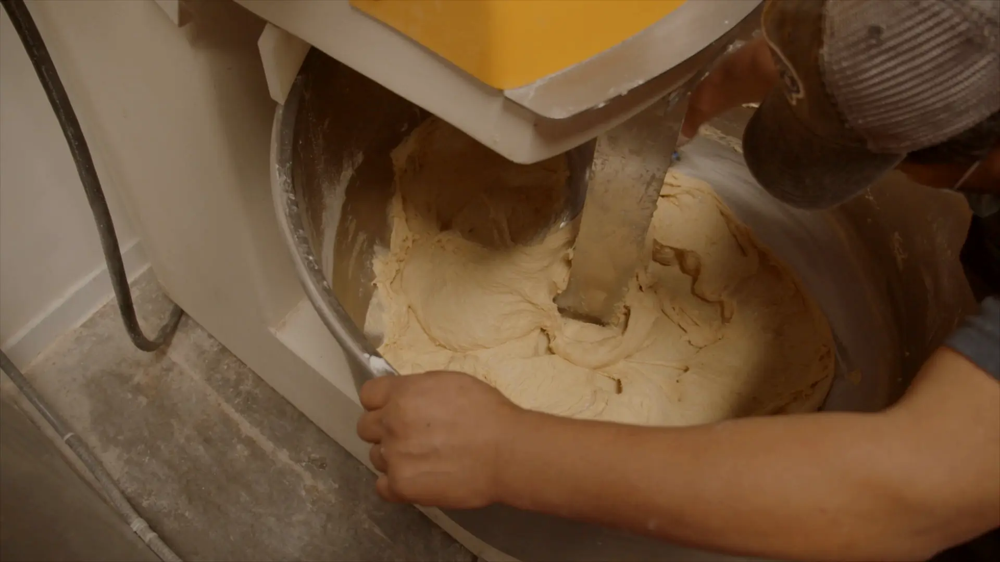
Hour 1 of 5 Mix
Bread is made while you sleep.
At 02:00 the first bowl is already turning: 62 kg of flour, a levain that has been working cold since four yesterday afternoon, and two people who would rather you did not ask them anything until the dough is at 24 °C.
- First bowl
- 62 kg
- Dough
- 24 °C
- On shift
- 2
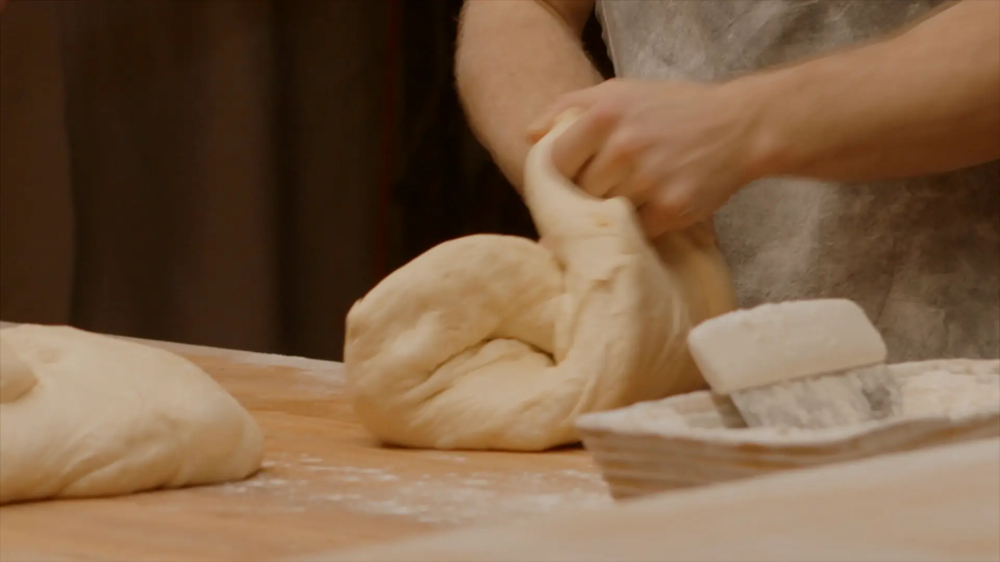
Hour 2 of 5 Shape
Hands, not machines.
The country loaves are folded by hand, 14 to a board, 780 g each. Baguettes get a 20-minute rest after pre-shaping and are then rolled out to 62 cm, one at a time, by whoever has the steadiest wrists that week.
- Country loaf
- 780 g
- Baguette
- 62 cm
- Rest
- 20 min
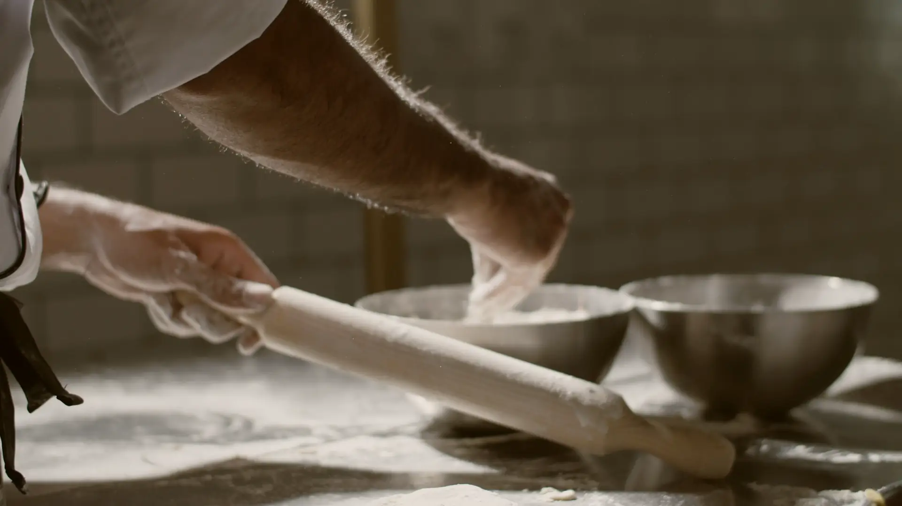
Hour 3 of 5 Roll and fold
Roll. Fold. Chill. Again.
Croissant dough takes three folds in ninety minutes, and every fold ends in the fridge so the butter stays a sheet instead of a smear. Three folds make 27 layers. The bench stays cold, the pin stays heavy, and nobody opens the door to the hot kitchen until the last one is done.
- Folds
- 3
- Layers
- 27
- Window
- 90 min
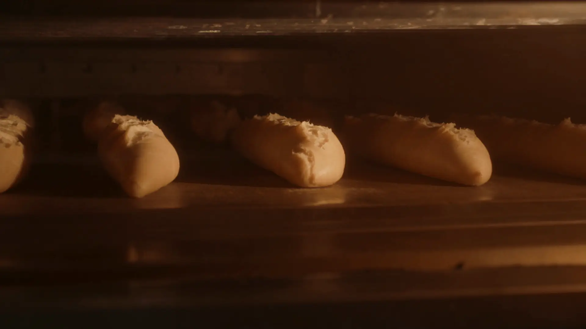
Hour 4 of 5 Bake
The oven woke at half past three.
The deck oven goes in at 250 °C and the first load gets twelve seconds of steam before the door is shut. The country loaves stay in for 40 minutes; baguettes need 24. Nothing in this hour is hurried, because everything in it is now fixed.
- Oven
- 250 °C
- Steam
- 12 s
- Baguette
- 24 min
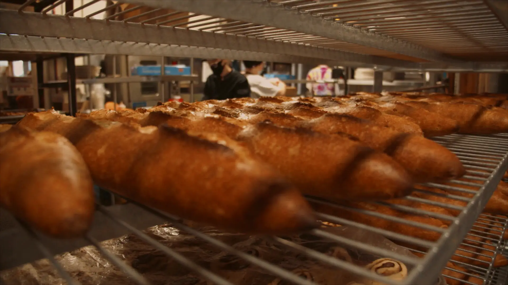
Hour 5 of 5 First tray out
They sing on the rack.
The first baguettes leave the oven at 05:52. For the next ten minutes the crust cools faster than the crumb and crackles, and the people who work here stand very still and listen to it. Then somebody sweeps the floor, and the doors are almost ready.
- First tray
- 05:52
- Loaves
- 38
- Crackle
- 10 min
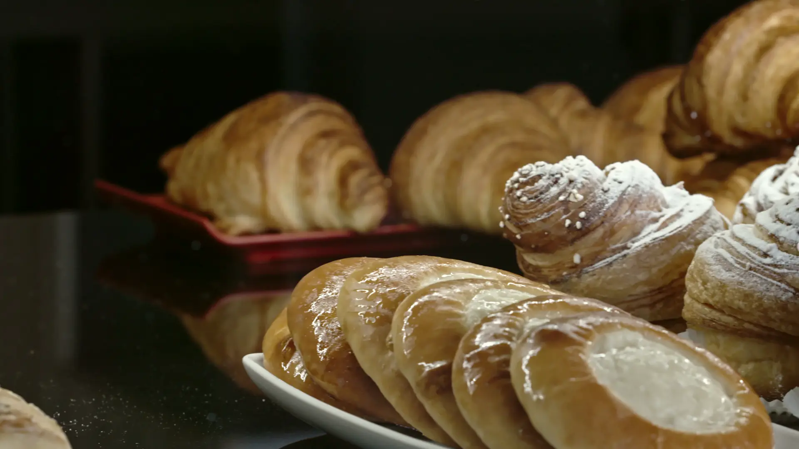
07:00 Doors
We open at seven.
Everything below came out of the oven this morning, in the order it came out.
First out: country sourdough, baguette, butter croissant.
Coffee starts when the doors do.
One house blend, ground to order, pulled on a two-group machine that gets cleaned at 05:00 like everything else.
- EspressoS$3.80
- Flat whiteS$5.20
- Kopi-o gao, our wayS$3.60
- Cold brew, 18 hoursS$5.80
A counter, eleven seats and a window.
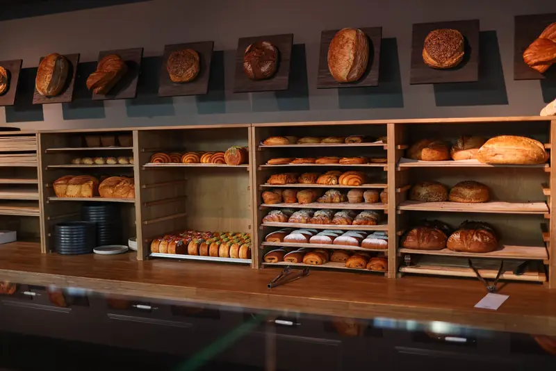
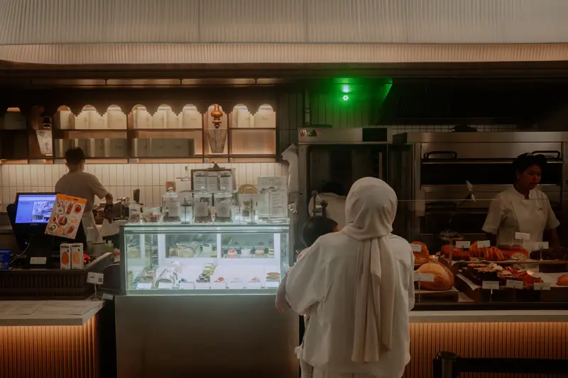
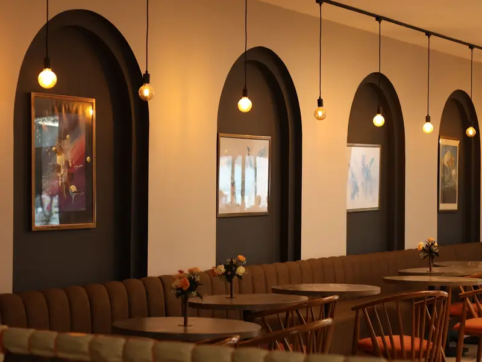
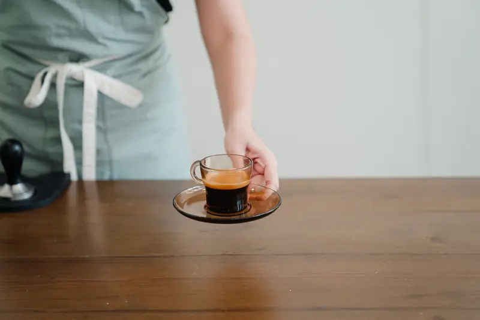
Flour, crust and a peel by the door.
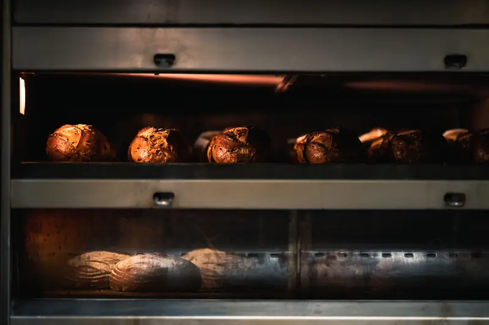
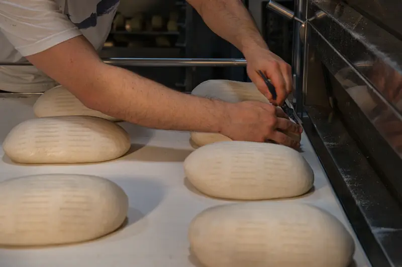
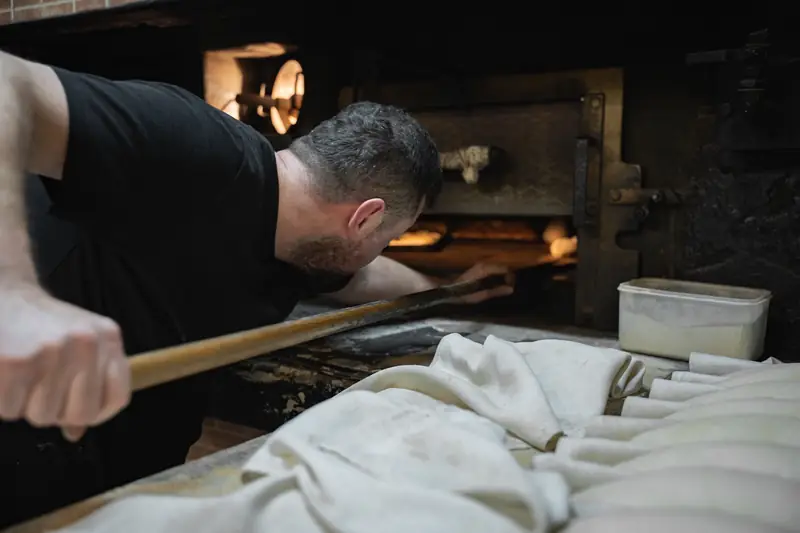
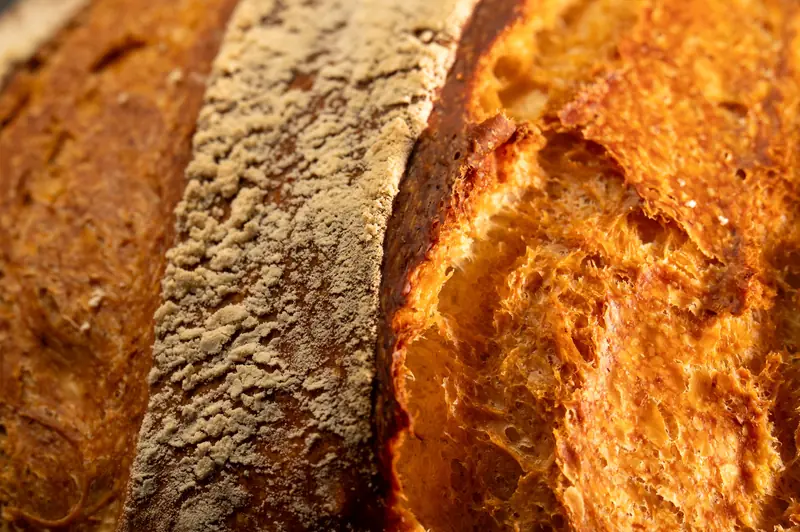
Visit Find the door
37 Pelangi Lane, #01-14.
Look for the light on at five in the morning and the line at seven. If the street door is shut, the back is open and someone will let you in for a loaf.
Want a loaf set aside for tomorrow? Call or message before 18:00 today and it will be on the rack with your name on a bit of paper.
Hours, and the night before them
- Tuesday to Friday
- 07:00 – 17:00
- Saturday and Sunday
- 07:00 – 16:00
- Monday
- The ovens rest
The dark bar is the night shift, the amber bar is the shop. Most loaves are gone by 13:00. The last croissants usually go before ten.